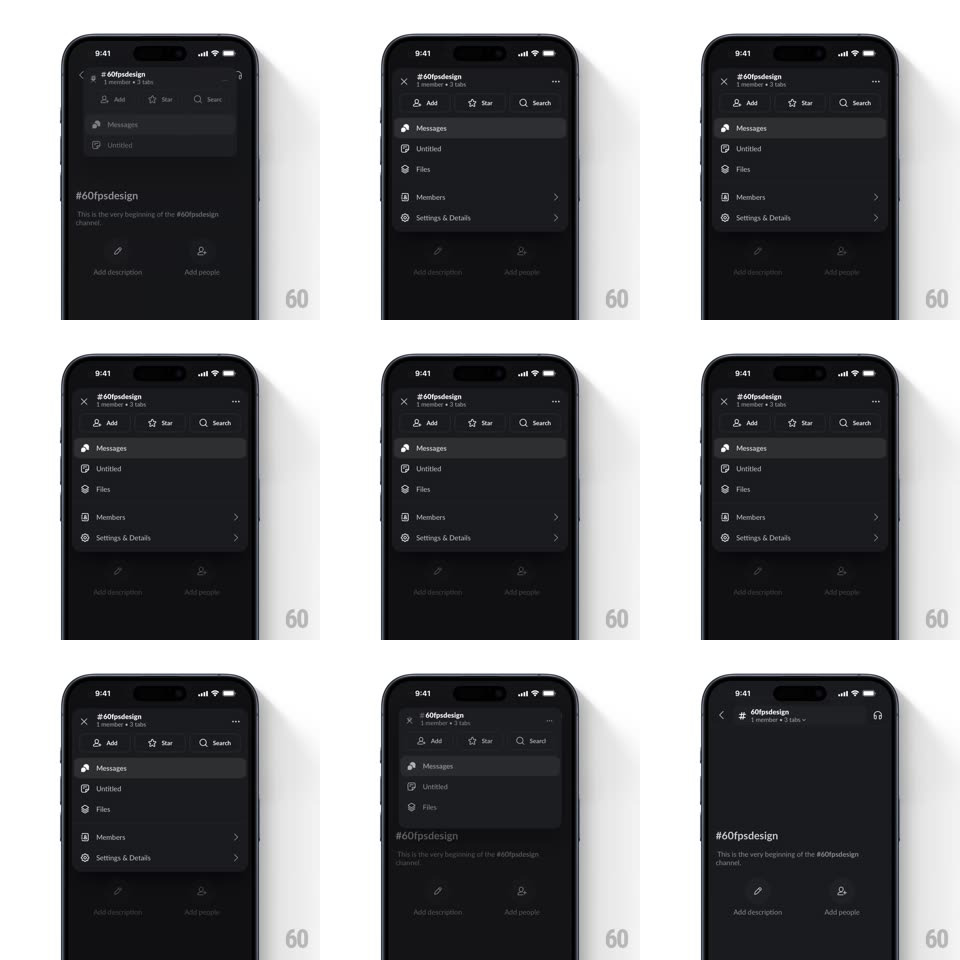

Media
Frame-by-frame

Rebuild this interaction 1:1: Slack's channel options morph - tapping the channel header expands it into a rounded options card (Add / Star / Search row, then Messages, Untitled, Files, Members, Settings & Details rows) that grows seamlessly out of the header and collapses back into it.

Rebuild this interaction 1:1: Slack's channel options morph - tapping the channel header expands it into a rounded options card (Add / Star / Search row, then Messages, Untitled, Files, Members, Settings & Details rows) that grows seamlessly out of the header and collapses back into it. ## Integration Integration: stack-agnostic spec - springs given as stiffness/damping, timed motions as duration + curve; map every value to your framework and animation library of choice. ## Scene Dark Slack channel (#60fpsdesign, "1 member - 3 tabs"): message area with channel intro copy and Add description / Add people shortcuts. Expanded state: the header morphs into a floating dark card pinned under the nav bar - three action buttons (Add, Star, Search), then list rows: Messages (highlighted), Untitled, Files, Members >, Settings & Details >. The back chevron becomes an X during expansion. ## Motion spec Pattern: header-to-card morph, ~350ms. - Expand: the header's bounds grow into the card (height + width expand, 300ms, ease-out, corner radius 0 -> 14px); the message area behind dims and pushes down slightly (8px). - Content: the action button row fades in first (150ms), list rows follow with 40ms stagger, sliding down 6px each. - Chevron swap: back-chevron crossfades to X (150ms). - Collapse: the reverse - rows stagger out, card shrinks back into the header (250ms, ease-in). ## Calibration - The morph is one continuous shape change - the card and header share a surface, no crossfade between two views. - The rest of the screen stays mounted; only the header region deforms. ## Reduced motion Card fades in over the header (200ms); no shape morph. ## Don't miss - The expanded card keeps the channel name row visible at its top as the morph's anchor. - "Messages" row arrives pre-highlighted as the active tab.